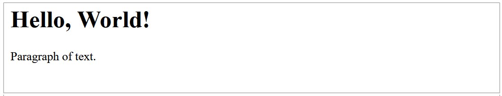
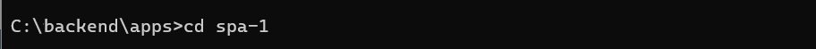
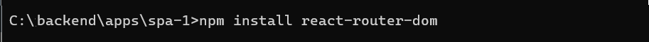

About Single Page (SPA) Applications
In a traditional multi-page website, each page is a different HTML file. Navigating to different pages causes a full page reload, fetching a new HTML document from the server. This is called Server-Side Rendering (SSR). Content is typically rendered on the server, and the complete HTML is sent to the client.
In contrast, a React app dynamically updates the current page rather than loading entire new pages from the server. Content is loaded once, and new data is retrieved as needed without page reloads.
This is called Client-Side Rendering (CSR). The server sends a single HTML page initially, and the content is then rendered on the client side using JavaScript. Such apps are known as Single Page Applications or SPAs.

Starting with create-react-app
Follow these steps to create your basic app structure with the create-react-app script.
- Open a new Command prompt window or, in VS Code, a new Terminal.
- Navigate to where you want ReactJS to create a folder for your app. For example:
C:\> users\JohnSmith
- Type the following command that includes the name you want to call your new app. For example, spa-blog.
C:\> npx create-react-app spa
After you have created your app, you launch it by running the following command from inside your new app folder.
npm start
A new browser window should display with your new app running on the ReactJS local development server. If not, open a new browser tab and enter http://localhost:3000.
You will see a screen similar to the following.

Customising your CRA-created content
Now you will customise the 'boilerplate' content provided by the create-react-app (CRA) script.
The /public folder
- In your app’s /public folder, open the index.html file and replace all its content with the following.
<!DOCTYPE html> <html lang="en"> <head> <meta charset="utf-8" /> <meta name="viewport" content="width=device-width, initial-scale=1" /> <title>Single Page Application Blog App</title> <meta name="description" content="An SPA blog app created with ReactJS" /> <link rel="manifest" href="%PUBLIC_URL%/manifest.json" /> </head> <body> <div id="root"></div> </body> </html>
The /src folder
- In the /src folder, open the index.js file and replace all its content with the following.
import React from 'react'; import ReactDOM from 'react-dom/client'; import App from './App'; const root = ReactDOM.createRoot(document.getElementById('root')); root.render( <React.StrictMode> <App /> </React.StrictMode> ); - And again in the /src folder, open the App.js file and replace its content with the following.
function App() { return ( <> <h1>Hello, World!</h1> <p>Paragraph of text.</p> </> ); } export default App;
Your web page should now look as shown below.
Working with react-router-dom
ReactJS does not natively support page routing. So you need to use NPM (Node Package Manager) to install a new package named react-router-dom for this purpose. You can then import and use that package in your app.
Installing the react-router-dom package
- Open new Command prompt window or, in VS Code, a new Terminal.
- Navigate to the folder that contains your app. For example: 
- Run the following command inside your app folder:
npm install react-router-domFor example: 
Importing react-router-dom into your App component
- At the top of your App.js component file, add the following import statement:
import { BrowserRouter, Routes, Route } from "react-router-dom"; - Developers often shorten the name of the BrowserRouter function with the Router alias. See below:
import { BrowserRouter as Router, Routes, Route } from "react-router-dom";
Here is a summary of what these three imported named functions do:
BrowserRouter |
Provides the routing functionality for your app. |
Routes |
Defines the routes for your app. |
Route |
Defines a single route. |
Adding the ‘pages’ to your app
Add pages (realy components) to an app is a three-step process:
- Create the component files that will be served as pages.
- Import these component files into your main or ‘parent’ App component.
- Include page routes in your App component.
Creating your page components
Each ‘page’ in your SPA will be a component file, stored in a /pages sub-folder of your /src folder. Follow these steps:
- In your app’s /src folder, create a sub-folder named /pages.
- Download the files below to your new /src/pages sub-folder.
Home.js
Products.js
Contact.js
Navbar.js
Footer.js
PageNotFound.js - Save the following file in your /src folder. It will overwrite the stylesheet file of the same name created by the create-react-app script.
App.css
Importing the page components to your App component
At the top of the App.js file, after the react-router-dom imports, import your three page components:
import { Home } from "./pages/Home";
import { Products } from "./pages/Products";
import { Contact } from "./pages/Contact";
import { PageNotFound } from "./pages/PageNotFound";Adding the page routes in your App component
Now you will add routes to the main App() component to enable users to navigate between the pages of your SPA.
Update the App() function as shown below. Each Route now has a path and an element prop:
function App() {
return (
<Router>
<Routes>
<Route path="/" element = {<Home />} />
<Route path="/products" element = {<Products />} />
<Route path="/contact" element = {<Contact />} />
</Routes>
</Router>
);
}Verifying your app’s URL paths
In your web browser, verify that your three web pages display correctly by entering the following web addresses.
- http://localhost:3000
- http://localhost:3000/products
- http://localhost:3000/contact
Adding an error route
It is good practice to create a page route to handle situations where the user enters the web address of a page that does not exist in your SPA. For example:
- http://localhost:3000/abc123
You can do this with the wildcard asterisk * character as follows.
<Route path="*" element = "Page does not exist." />A better option would be to use a special web page for this purpose and add a route to it as follows:
<Route path="*" element = { <PageNotFound /> } />Adding a navbar and footer to your app
To add an element that you want to display on every 'page', include the relevant component:
- Import the relevant element at the top of the App.js. For example:
import Navbar from "./pages/Navbar"; import Footer from "./pages/Footer"; - Place the component inside the <Router> component
- But not as an individual <Routes> component.
See below.
function App() {
return (
<Router>
<Navbar>
<Routes>
<Route path="/" element = {<Home />} />
<Route path="/products" element = {<Products />} />
<Route path="/contact" element = {<Contact />} />
</Routes>
<Footer>
</Router>
);
}